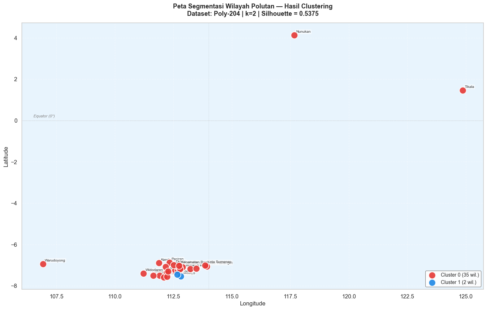
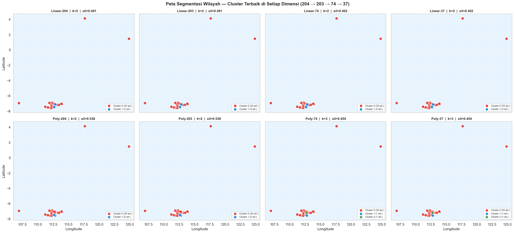

Tahap 4 — Visualisasi Peta Segmentasi Wilayah#
Tahap terakhir ini menampilkan hasil clustering di atas peta interaktif Indonesia menggunakan library Folium (berbasis Leaflet.js). Setiap wilayah divisualisasikan dengan warna berbeda sesuai clusternya.
Mengapa Peta?#
Peta adalah cara paling intuitif untuk memahami pola spasial clustering:
Apakah wilayah yang berdekatan cenderung masuk ke cluster yang sama?
Apakah ada pola regional (Jawa, Kalimantan, dll.)?
Wilayah mana yang memiliki karakteristik polutan paling unik (outlier)?
Strategi Geocoding#
Data tidak memiliki kolom koordinat, sehingga kita perlu geocoding — mengubah nama daerah menjadi koordinat (latitude, longitude).
Strategi yang digunakan (prioritas berurutan):
Lookup hardcoded — koordinat yang sudah diverifikasi manual
Nominatim (OpenStreetMap) — geocoding otomatis via geopy
Fallback — koordinat pusat Jawa Timur + jitter acak (jika gagal)
Warning
Hasil geocoding otomatis bisa tidak akurat untuk nama daerah yang ambigu. Verifikasi koordinat dengan membuka peta interaktif yang dihasilkan.
Peta untuk Setiap Dimensi#
Notebook ini memetakan hasil clustering terbaik di setiap dimensi (204 → 203 → 74 → 37) untuk interpolasi Linear dan Polynomial, bukan hanya satu konfigurasi terbaik global. Peta interaktif memiliki satu layer per dimensi, dan peta statis menampilkan semuanya berdampingan.
4.1 Import & Load Data Tahap 3#
import warnings
warnings.filterwarnings('ignore')
import pickle, os, json, time
import numpy as np
import pandas as pd
import matplotlib.pyplot as plt
import matplotlib.patches as mpatches
import seaborn as sns
import folium
from folium import plugins
OUTPUT_DIR = '../output'
plt.rcParams['figure.figsize'] = (13, 5)
sns.set_theme(style='whitegrid', font_scale=1.05)
# ── Load data dari Tahap 3 ───────────────────────────────────
with open(f'{OUTPUT_DIR}/tahap3_clustering.pkl', 'rb') as f:
d = pickle.load(f)
BEST_DATASET = d['BEST_DATASET']
BEST_K = d['BEST_K']
BEST_SIL = d['BEST_SIL']
BEST_LABELS = d['BEST_LABELS']
CLUSTER_COLORS = d['CLUSTER_COLORS']
meta_linear = d['meta_linear']
meta_poly = d['meta_poly']
X_linear = d['X_linear']
X_poly = d['X_poly']
df_hasil = d['df_hasil']
# Hasil cluster terbaik untuk SETIAP dimensi (dibuat di Tahap 3 versi terbaru)
BEST_PER_DIM = d.get('BEST_PER_DIM')
if BEST_PER_DIM is None:
raise KeyError('BEST_PER_DIM tidak ada di tahap3_clustering.pkl. '
'Jalankan ulang notebook Tahap 3 (versi terbaru) sampai sel terakhir, lalu ulangi Tahap 4.')
DIMENSI = d.get('DIMENSI', [204, 203, 74, 37])
meta_best = meta_linear if 'Linear' in BEST_DATASET else meta_poly
X_raw = X_linear if 'Linear' in BEST_DATASET else X_poly
print(f'Data Tahap 3 berhasil dimuat.')
print(f' Konfigurasi terbaik: {BEST_DATASET}, k={BEST_K}, sil={BEST_SIL:.4f}')
print(f' Jumlah wilayah : {len(meta_best)}')
print(f' Hasil per dimensi : {len(BEST_PER_DIM)} konfigurasi ({", ".join(v["dataset"] for v in BEST_PER_DIM.values())})')
Data Tahap 3 berhasil dimuat.
Konfigurasi terbaik: Poly-204, k=2, sil=0.5375
Jumlah wilayah : 37
Hasil per dimensi : 8 konfigurasi (Linear-204, Linear-203, Linear-74, Linear-37, Poly-204, Poly-203, Poly-74, Poly-37)
4.2 Geocoding: Nama Daerah → Koordinat#
# ── Koordinat hardcoded (terverifikasi manual) ────────────────
KOORDINAT_DB = {
'Baron Nganjuk' : (-7.5083, 111.9167),
'Nunukan' : ( 4.1333, 117.6667),
'Sreseh, Sampang' : (-7.1833, 113.2167),
'Manyar, Gresik' : (-7.1500, 112.6500),
'Kamal, Bangkalan' : (-7.1833, 112.7833),
'Kedungpring Lamongan' : (-7.3500, 112.2167),
'Gresik Kota, Gresik' : (-7.1556, 112.6527),
'Waru, Pamekasan' : (-7.1667, 113.4833),
'Paciran, Lamongan' : (-6.8667, 112.3333),
'Kertosono, Nganjuk' : (-7.5833, 112.1000),
}
# Koreksi manual untuk wilayah yang koordinatnya salah (mis. jatuh di Bali / Laut Jawa).
# Koordinat ini PERKIRAAN pada tingkat kecamatan/kabupaten, silakan periksa dan ubah bila perlu.
KOREKSI_MANUAL = {
'Banyu Ajuh, Perumnas, Kamal': (-7.1833, 112.7833), # Kamal, Bangkalan (sama dengan entri Kamal lain)
'Bandung - Jogoroto, Jombang': (-7.5467, 112.2331), # Kabupaten Jombang (perkiraan)
'Kec. Kalianget, Sumenep' : (-7.0583, 113.9333), # Kalianget, Sumenep (perkiraan)
}
DEFAULT_KOORDINAT = (-7.5, 112.7) # dipakai (dan diberi peringatan) jika koordinat tidak ditemukan
CACHE_FILE = f'{OUTPUT_DIR}/koordinat_cache.json'
# Load cache yang sudah ada
if os.path.exists(CACHE_FILE):
with open(CACHE_FILE) as f:
koordinat_cache = json.load(f)
print(f'Cache dimuat: {len(koordinat_cache)} koordinat')
else:
koordinat_cache = {}
# Terapkan koreksi manual (menimpa nilai lama di cache)
for nama_wil, coord in KOREKSI_MANUAL.items():
koordinat_cache[nama_wil] = list(coord)
print(f'Koreksi manual diterapkan: {len(KOREKSI_MANUAL)} wilayah')
def get_koordinat(daerah: str):
"""Cari koordinat: cache -> hardcoded -> Nominatim. Mengembalikan (koordinat, sumber)."""
if daerah in koordinat_cache:
return tuple(koordinat_cache[daerah]), 'cache'
for key, coord in KOORDINAT_DB.items():
if key.lower() in daerah.lower() or daerah.lower() in key.lower():
return coord, 'hardcoded'
try:
from geopy.geocoders import Nominatim
from geopy.extra.rate_limiter import RateLimiter
geo = Nominatim(user_agent='psd_cluster_2026')
geocode = RateLimiter(geo.geocode, min_delay_seconds=1)
loc = geocode(daerah + ', Indonesia')
if loc:
print(f' Nominatim: {daerah} → ({loc.latitude:.4f}, {loc.longitude:.4f})')
return (loc.latitude, loc.longitude), 'nominatim'
except Exception as e:
print(f' Nominatim gagal ({daerah}): {e}')
return DEFAULT_KOORDINAT, 'fallback'
# Geocode semua wilayah (gabungan Linear & Poly)
daftar_daerah = sorted(set(meta_linear['daerah']) | set(meta_poly['daerah']))
print(f'\nMengambil koordinat {len(daftar_daerah)} wilayah...')
fallback_list = []
for daerah in daftar_daerah:
if daerah in koordinat_cache:
continue
coord, sumber = get_koordinat(daerah)
if sumber == 'fallback':
fallback_list.append(daerah) # TIDAK disimpan ke cache
else:
koordinat_cache[daerah] = [coord[0], coord[1]]
time.sleep(0.3)
# Simpan cache
with open(CACHE_FILE, 'w', encoding='utf-8') as f:
json.dump(koordinat_cache, f, indent=2, ensure_ascii=False)
print(f'\nTotal koordinat: {len(koordinat_cache)} wilayah → disimpan ke cache')
if fallback_list:
print('\nPERINGATAN: koordinat tidak ditemukan untuk wilayah berikut (diletakkan di titik default,')
print(' tambahkan ke KOREKSI_MANUAL agar tampil di lokasi yang benar):')
for nama_wil in fallback_list:
print(f' - {nama_wil}')
Cache dimuat: 35 koordinat
Koreksi manual diterapkan: 3 wilayah
Mengambil koordinat 36 wilayah...
Nominatim gagal (Jabon , Sidoarjo): No module named 'geopy'
Total koordinat: 35 wilayah → disimpan ke cache
PERINGATAN: koordinat tidak ditemukan untuk wilayah berikut (diletakkan di titik default,
tambahkan ke KOREKSI_MANUAL agar tampil di lokasi yang benar):
- Jabon , Sidoarjo
4.3 Siapkan DataFrame Peta#
# ── Gabungkan label cluster + koordinat untuk SETIAP dimensi ──
def buat_df_peta(info):
metode = info['metode']
meta = (meta_linear if metode == 'Linear' else meta_poly).reset_index(drop=True)
X_r = X_linear if metode == 'Linear' else X_poly
df = meta.copy()
df['cluster'] = info['labels']
df['lat'] = df['daerah'].map(lambda x: koordinat_cache.get(x, list(DEFAULT_KOORDINAT))[0])
df['lon'] = df['daerah'].map(lambda x: koordinat_cache.get(x, list(DEFAULT_KOORDINAT))[1])
for pol in ['no2', 'so2', 'co']: # statistik polutan utama (mean)
col_mean = f'{pol}_calc_mean'
df[f'{pol}_mean'] = X_r[col_mean].values if col_mean in X_r.columns else np.nan
return df
df_maps = {info['dataset']: buat_df_peta(info) for info in BEST_PER_DIM.values()}
# Konfigurasi terbaik global (dipakai sel peta statis tunggal)
df_map = df_maps[BEST_DATASET]
print('Ringkasan cluster terbaik per dimensi:')
for metode in ['Linear', 'Poly']:
for dim in DIMENSI:
info = BEST_PER_DIM.get((metode, dim))
if info:
print(f" {info['dataset']:<11} k={info['k']} sil={info['silhouette']:.4f} ukuran cluster: {info['ukuran']}")
print(f'\nDataFrame peta konfigurasi terbaik global ({BEST_DATASET}):')
print(df_map[['daerah','cluster','lat','lon','no2_mean','so2_mean','co_mean']].to_string())
Ringkasan cluster terbaik per dimensi:
Linear-204 k=2 sil=0.4909 ukuran cluster: [34, 3]
Linear-203 k=2 sil=0.4909 ukuran cluster: [34, 3]
Linear-74 k=2 sil=0.4021 ukuran cluster: [33, 4]
Linear-37 k=2 sil=0.4021 ukuran cluster: [33, 4]
Poly-204 k=2 sil=0.5375 ukuran cluster: [35, 2]
Poly-203 k=2 sil=0.5375 ukuran cluster: [35, 2]
Poly-74 k=3 sil=0.4543 ukuran cluster: [35, 1, 1]
Poly-37 k=3 sil=0.4543 ukuran cluster: [35, 1, 1]
DataFrame peta konfigurasi terbaik global (Poly-204):
daerah cluster lat lon no2_mean so2_mean co_mean
0 Baron Nganjuk 0 -7.508300 111.916700 0.000028 0.000072 0.030248
1 Nunukan 0 4.133300 117.666700 0.000007 -0.000005 0.027691
2 Sreseh, Sampang 0 -7.183300 113.216700 0.000027 0.000007 0.029516
3 Manyar, Gresik 0 -7.150000 112.650000 0.000071 0.000161 0.028816
4 Kamal, Bangkalan 0 -7.183300 112.783300 0.000083 0.000140 0.027027
5 Kedungpring Lamongan 0 -7.350000 112.216700 0.000030 0.000067 0.029689
6 Gresik Kota, Gresik 0 -7.155600 112.652700 0.000064 0.000183 0.028956
7 Waru, Pamekasan 0 -7.166700 113.483300 0.000015 -0.000035 0.027199
8 Paciran, Lamongan 0 -6.866700 112.333300 0.000029 0.000030 0.029583
9 Kertosono, Nganjuk 0 -7.583300 112.100000 0.000030 0.000084 0.030080
10 Jabon, Sidoarjo 1 -7.535107 112.810693 0.000032 0.000133 0.029341
11 Menganti, Gresik 0 -7.302893 112.582880 0.000048 0.000090 0.029256
12 Bandung - Jogoroto, Jombang 0 -7.546700 112.233100 0.000032 0.000067 0.029455
13 Banyu Ajuh, Perumnas, Kamal 0 -7.183300 112.783300 0.000043 0.000040 0.028701
14 Widang, Tuban 0 -7.085111 112.170846 0.000031 0.000025 0.029439
15 Kwanyar, Bangkalan 0 -7.163871 112.850963 0.000028 0.000033 0.028343
16 sambeng, lamongan 0 -7.297267 112.270859 0.000030 0.000061 0.029020
17 Kec. Kalianget, Sumenep 0 -7.058300 113.933300 0.000016 -0.000006 0.027837
18 Cerme, Gresik 0 -7.224250 112.570795 0.000070 0.000180 0.030548
19 Tikala, Manado 0 1.467980 124.862466 0.000009 -0.000013 0.025340
20 Kerek, Tuban 0 -6.897059 111.885492 0.000043 0.000033 0.029654
21 Kwanyar, Bangkalan 0 -7.163871 112.850963 0.000029 0.000033 0.028166
22 Wonokromo, Surabaya 0 -7.302055 112.739222 0.000043 0.000049 0.028974
23 Asemrowo, Surabaya 0 -7.241740 112.688802 0.000054 0.000253 0.029542
24 Kota Sumenep, Sumenep 0 -7.006745 113.859867 0.000016 -0.000004 0.027623
25 Socah, Bangkalan 0 -7.090936 112.705530 0.000029 0.000054 0.028635
26 Pilangkenceng, Madiun 0 -7.499596 111.644255 0.000021 0.000067 0.029531
27 Tanah Merah, Bangkalan 0 -7.088275 112.885340 0.000028 0.000153 0.028259
28 Sidoarjo, Wonoayu 1 -7.445557 112.664448 0.000043 0.000171 0.031353
29 Labang, Bangkalan 0 -7.139610 112.773094 0.000029 0.000060 0.028723
30 Widodaren, Ngawi 0 -7.402855 111.223853 0.000024 0.000022 0.029528
31 Bangkalan, Bangkalan 0 -7.029470 112.747333 0.000026 0.000098 0.028608
32 Warudoyong, Kota Sukabumi 0 -6.934076 106.920945 0.000035 0.000023 0.028070
33 Kamal, Bangkalan 0 -7.183300 112.783300 0.000046 0.000052 0.028812
34 Banyuajuh kamal, Bangkalan 0 -7.183300 112.783300 0.000044 0.000059 0.028746
35 Dukun, Gresik 0 -6.996352 112.509848 0.000029 0.000044 0.029046
36 Kecamatan Bangkalan,Bangkalan 0 -7.029470 112.747333 0.000025 0.000031 0.028511
4.4 Peta Interaktif Folium — Satu Layer per Dimensi#
Peta interaktif ini menggunakan Leaflet.js via Folium, dengan fitur:
Satu layer untuk setiap dimensi (Linear dan Poly × 204, 203, 74, 37). Pilih layer di kontrol kanan atas (default: konfigurasi terbaik global)
Marker berwarna per cluster (dapat diklik untuk detail)
Pilihan basemap (OpenStreetMap, Esri Street, Citra Satelit)
Ringkasan hasil semua dimensi di pojok kiri bawah
Tooltip saat hover
Aktifkan satu layer pada satu waktu agar marker tidak saling menumpuk.
# ── Buat peta Folium ──────────────────────────────────────────
# CATATAN: tile CARTO ('CartoDB positron' / 'CartoDB dark_matter') sekarang wajib API key,
# tanpa key peta menampilkan watermark "API KEY REQUIRED". Karena itu basemap default diganti
# ke provider yang tidak memerlukan key (OpenStreetMap dan Esri).
m = folium.Map(
location=[-2.5, 118.0], # Pusat Indonesia
zoom_start=5,
tiles=None, # basemap ditambahkan manual di bawah
control_scale=True
)
folium.TileLayer('OpenStreetMap', name='OpenStreetMap (default)', show=True).add_to(m)
folium.TileLayer(
tiles='https://server.arcgisonline.com/ArcGIS/rest/services/World_Street_Map/MapServer/tile/{z}/{y}/{x}',
attr='Tiles © Esri',
name='Esri Street Map', show=False
).add_to(m)
folium.TileLayer(
tiles='https://server.arcgisonline.com/ArcGIS/rest/services/World_Imagery/MapServer/tile/{z}/{y}/{x}',
attr='Tiles © Esri — Source: Esri, Maxar, Earthstar Geographics',
name='Citra Satelit (Esri)', show=False
).add_to(m)
# OPSIONAL: aktifkan basemap CARTO jika Anda punya API key gratis (carto.com/basemaps/apikey).
# Simpan key di environment variable CARTO_API_KEY, jangan ditulis langsung di notebook.
CARTO_KEY = os.environ.get('CARTO_API_KEY', '')
if CARTO_KEY:
carto_attr = ('© <a href="https://www.openstreetmap.org/copyright">OpenStreetMap</a>, '
'© <a href="https://carto.com/attributions">CARTO</a>')
for estilo, nama in [('light_all', 'CARTO Light'), ('dark_all', 'CARTO Dark')]:
folium.TileLayer(
tiles=f'https://basemaps.cartocdn.com/rastertiles/{estilo}/{{z}}/{{x}}/{{y}}.png?key={CARTO_KEY}',
attr=carto_attr, name=nama, show=False
).add_to(m)
# ── Satu FeatureGroup (layer) untuk setiap dimensi ───────────
def tambah_layer(peta, df, info, tampil):
nama_layer = (f"{info['metode']} {info['dimensi']} dimensi | "
f"k={info['k']}, sil={info['silhouette']:.3f}")
fg = folium.FeatureGroup(name=nama_layer, show=tampil)
for _, row in df.iterrows():
c = int(row['cluster'])
col = CLUSTER_COLORS[c % len(CLUSTER_COLORS)]
no2_txt = f"{row['no2_mean']:.4f}" if pd.notna(row.get('no2_mean')) else 'N/A'
so2_txt = f"{row['so2_mean']:.4f}" if pd.notna(row.get('so2_mean')) else 'N/A'
co_txt = f"{row['co_mean']:.4f}" if pd.notna(row.get('co_mean')) else 'N/A'
popup_html = f"""
<div style="font-family:'Segoe UI',Arial,sans-serif; min-width:220px; max-width:280px;">
<div style="background:{col};color:white;padding:8px 12px;border-radius:6px 6px 0 0;">
<b style="font-size:14px;">Cluster {c}</b>
</div>
<div style="padding:10px 12px;border:1px solid #eee;border-top:none;border-radius:0 0 6px 6px;">
<table style="width:100%;border-collapse:collapse;font-size:12px;">
<tr><td style="color:#777;padding:2px 0">Daerah</td><td><b>{row['daerah']}</b></td></tr>
<tr><td style="color:#777;padding:2px 0">Nama</td><td>{row['nama']}</td></tr>
<tr><td style="color:#777;padding:2px 0">Koordinat</td><td>{row['lat']:.4f}, {row['lon']:.4f}</td></tr>
<tr><td colspan=2><hr style="margin:6px 0"></td></tr>
<tr><td style="color:#1565C0;padding:2px 0">NO₂ mean</td><td><b>{no2_txt}</b></td></tr>
<tr><td style="color:#B71C1C;padding:2px 0">SO₂ mean</td><td><b>{so2_txt}</b></td></tr>
<tr><td style="color:#1B5E20;padding:2px 0">CO mean</td><td><b>{co_txt}</b></td></tr>
<tr><td colspan=2><hr style="margin:6px 0"></td></tr>
<tr><td style="color:#777">Dataset</td><td>{info['dataset']}</td></tr>
<tr><td style="color:#777">k / Silhouette</td><td>{info['k']} / {info['silhouette']:.4f}</td></tr>
</table>
</div>
</div>
"""
folium.CircleMarker(
location=[row['lat'], row['lon']],
radius=14, color=col, fill=True,
fill_color=col, fill_opacity=0.75, weight=2.5,
popup=folium.Popup(popup_html, max_width=300),
tooltip=f"{info['dataset']} | Cluster {c}: {row['daerah']}"
).add_to(fg)
folium.Marker(
location=[row['lat'], row['lon']],
icon=folium.DivIcon(
html=(f'<div style="font-size:9px;font-weight:bold;color:white;'
f'background:{col};border-radius:50%;width:22px;height:22px;'
f'display:flex;align-items:center;justify-content:center;'
f'box-shadow:0 2px 4px rgba(0,0,0,0.4);">C{c}</div>'),
icon_size=(22, 22), icon_anchor=(11, 11)
),
tooltip=row['daerah']
).add_to(fg)
fg.add_to(peta)
n_layer = 0
for metode in ['Linear', 'Poly']:
for dim in DIMENSI:
info = BEST_PER_DIM.get((metode, dim))
if info is None:
continue
tambah_layer(m, df_maps[info['dataset']], info, tampil=(info['dataset'] == BEST_DATASET))
n_layer += 1
print(f'{n_layer} layer (dimensi) ditambahkan, masing-masing {len(df_map)} marker wilayah.')
8 layer (dimensi) ditambahkan, masing-masing 37 marker wilayah.
# ── Legenda HTML: ringkasan hasil di setiap dimensi ───────────
rows = ''
for metode in ['Linear', 'Poly']:
for dim in DIMENSI:
info = BEST_PER_DIM.get((metode, dim))
if info is None:
continue
ukuran = ' / '.join(str(u) for u in info['ukuran'])
bintang = ' ★' if info['dataset'] == BEST_DATASET else ''
rows += (f'<tr><td style="padding:2px 8px 2px 0"><b>{info["dataset"]}</b>{bintang}</td>'
f'<td style="padding:2px 8px">k={info["k"]}</td>'
f'<td style="padding:2px 8px">{info["silhouette"]:.3f}</td>'
f'<td style="padding:2px 0">{ukuran}</td></tr>')
warna_items = ''.join(
f'<span style="display:inline-flex;align-items:center;margin-right:8px;">'
f'<span style="width:12px;height:12px;border-radius:50%;background:{CLUSTER_COLORS[c]};'
f'margin-right:3px;"></span>C{c}</span>'
for c in range(max(v['k'] for v in BEST_PER_DIM.values()))
)
legend_html = f"""
<div style="position:fixed;bottom:30px;left:30px;z-index:9999;
background:white;padding:14px 18px;border-radius:10px;
box-shadow:0 4px 15px rgba(0,0,0,0.2);
font-family:'Segoe UI',Arial,sans-serif;font-size:11px;max-width:330px;">
<div style="font-size:14px;font-weight:bold;margin-bottom:4px;">Cluster Terbaik per Dimensi</div>
<div style="color:#777;margin-bottom:6px;">Pilih layer di kanan atas (★ = terbaik global)</div>
<table style="border-collapse:collapse;">
<tr style="color:#777;"><td>Dataset</td><td style="padding:0 8px">k</td><td style="padding:0 8px">Sil.</td><td>Ukuran cluster</td></tr>
{rows}
</table>
<div style="margin-top:8px;color:#555;">{warna_items}</div>
</div>
"""
m.get_root().html.add_child(folium.Element(legend_html))
# Layer control
folium.LayerControl(collapsed=False, position='topright').add_to(m)
# Minimap
try:
minimap = plugins.MiniMap(toggle_display=True, tile_layer='OpenStreetMap')
m.add_child(minimap)
except Exception:
pass
# Simpan peta
map_path = f'{OUTPUT_DIR}/peta_clustering_interaktif.html'
m.save(map_path)
print(f'Peta interaktif disimpan:')
print(f' {os.path.abspath(map_path)}')
print(f' Ukuran: {os.path.getsize(map_path)/1024:.0f} KB')
# Tampilkan di notebook
m
Peta interaktif disimpan:
C:\Users\OKAN\OneDrive\Dokumen\PSD\materi\Clustering_Segmentasi\output\peta_clustering_interaktif.html
Ukuran: 1073 KB
4.5 Peta Statis (Matplotlib) — untuk Laporan#
# ── Peta statis scatter ───────────────────────────────────────
fig, ax = plt.subplots(figsize=(14, 9))
for c in range(BEST_K):
mask = df_map['cluster'] == c
sub = df_map[mask]
ax.scatter(sub['lon'], sub['lat'],
s=200, color=CLUSTER_COLORS[c],
edgecolors='white', linewidth=1.5,
label=f'Cluster {c} ({mask.sum()} wil.)',
alpha=0.9, zorder=4)
for _, row in sub.iterrows():
ax.annotate(
row['daerah'].split(',')[0][:14],
xy=(row['lon'], row['lat']),
xytext=(4, 5), textcoords='offset points',
fontsize=7.5, color='#333',
bbox=dict(boxstyle='round,pad=0.2', facecolor='white', alpha=0.6, linewidth=0)
)
# Garis grid
ax.set_facecolor('#E8F4FD')
ax.grid(True, linestyle='--', alpha=0.4, color='white')
# Garis batas
ax.axhline(0, color='gray', linewidth=0.5, linestyle=':')
ax.axvline(114, color='gray', linewidth=0.5, linestyle=':', alpha=0.5)
ax.set_xlabel('Longitude', fontsize=12)
ax.set_ylabel('Latitude', fontsize=12)
ax.set_title(f'Peta Segmentasi Wilayah Polutan — Hasil Clustering\n'
f'Dataset: {BEST_DATASET} | k={BEST_K} | Silhouette = {BEST_SIL:.4f}',
fontsize=13, fontweight='bold', pad=15)
ax.legend(loc='lower right', fontsize=10, framealpha=0.9,
edgecolor='gray', fancybox=True)
# Anotasi equator
ax.text(ax.get_xlim()[0]+0.5, 0.15, 'Equator (0°)',
fontsize=8, color='gray', style='italic')
plt.tight_layout()
plt.savefig(f'{OUTPUT_DIR}/12_peta_statis.png', dpi=150, bbox_inches='tight')
plt.show()
print('Peta statis disimpan: output/12_peta_statis.png')

Peta statis disimpan: output/12_peta_statis.png
Peta Statis untuk Setiap Dimensi#
Cluster terbaik di setiap dimensi (baris atas Linear, baris bawah Polynomial), semua dengan skala peta yang sama agar mudah dibandingkan.
# ── Peta statis: 2 baris (Linear, Poly) x 4 kolom (204, 203, 74, 37) ──
fig, axes = plt.subplots(2, 4, figsize=(24, 11), sharex=True, sharey=True)
for r, metode in enumerate(['Linear', 'Poly']):
for ci, dim in enumerate(DIMENSI):
ax = axes[r, ci]
info = BEST_PER_DIM.get((metode, dim))
if info is None:
ax.axis('off')
continue
df_p = df_maps[info['dataset']]
for c in range(info['k']):
sub = df_p[df_p['cluster'] == c]
ax.scatter(sub['lon'], sub['lat'], s=90,
color=CLUSTER_COLORS[c % len(CLUSTER_COLORS)],
edgecolors='white', linewidth=1.2, alpha=0.9, zorder=4,
label=f'Cluster {c} ({len(sub)} wil.)')
ax.set_facecolor('#E8F4FD')
ax.grid(True, linestyle='--', alpha=0.4, color='white')
ax.set_title(f"{info['dataset']} | k={info['k']} | sil={info['silhouette']:.3f}",
fontweight='bold', fontsize=11)
ax.legend(loc='lower right', fontsize=8, framealpha=0.9)
if r == 1:
ax.set_xlabel('Longitude')
if ci == 0:
ax.set_ylabel('Latitude')
plt.suptitle('Peta Segmentasi Wilayah — Cluster Terbaik di Setiap Dimensi (204 → 203 → 74 → 37)',
fontsize=15, fontweight='bold')
plt.tight_layout()
plt.savefig(f'{OUTPUT_DIR}/13_peta_per_dimensi.png', dpi=150, bbox_inches='tight')
plt.show()
print('Peta statis per dimensi disimpan: output/13_peta_per_dimensi.png')

Peta statis per dimensi disimpan: output/13_peta_per_dimensi.png
4.6 Ringkasan Lengkap Analisis#
# ── Cetak ringkasan lengkap ───────────────────────────────────
separator = '=' * 65
print(separator)
print(' RINGKASAN LENGKAP ANALISIS CLUSTERING SEGMENTASI POLUTAN')
print(separator)
print('\n[TAHAP 1] DATA & EDA')
print(f' Sumber : MySQL — basisda1_PSD-A-Interpolasi')
print(f' Tabel : ekstraksi_fitur_linear + ekstraksi_fitur_polynomial')
print(f' Ukuran : 37 wilayah × 204 fitur (68 per polutan)')
print('\n[TAHAP 2] REDUKSI DIMENSI')
print(f' Standardisasi : StandardScaler (mean=0, std=1)')
print(f' Urutan : 204 → 203 → 74 → 37')
print(f' 204 → 203 : seleksi fitur (buang 1 fitur paling redundan)')
print(f' 203 → 74 : seleksi fitur (buang 129 fitur paling redundan)')
print(f' 74 → 37 : PCA (37 komponen)')
print('\n[TAHAP 3] EKSPERIMEN CLUSTERING')
print(f' Algoritma : K-Means (k-means++, n_init=20)')
print(f' Variasi : {df_hasil["dataset"].nunique()} dataset × k=2..10 = {len(df_hasil)} eksperimen')
print(f' Evaluasi : Silhouette Coefficient')
print(f' Terbaik global: {BEST_DATASET}, k={BEST_K}, silhouette={BEST_SIL:.4f}')
print('\n Cluster terbaik di setiap dimensi:')
for metode in ['Linear', 'Poly']:
for dim in DIMENSI:
info = BEST_PER_DIM.get((metode, dim))
if info:
print(f" {info['dataset']:<11} k={info['k']} sil={info['silhouette']:.4f} "
f"ukuran: {' / '.join(str(u) for u in info['ukuran'])}")
print('\n[TAHAP 4] VISUALISASI PETA')
print(f' Geocoding : Nominatim (OpenStreetMap) + hardcoded')
print(f' Peta interaktif : output/peta_clustering_interaktif.html')
print(f' Peta statis : output/12_peta_statis.png')
print(f' Peta per dimensi: output/13_peta_per_dimensi.png')
print('\nDISTRIBUSI WILAYAH PER CLUSTER:')
print('-' * 65)
for c in range(BEST_K):
mask = df_map['cluster'] == c
wils = df_map[mask]['daerah'].tolist()
print(f'\nCluster {c} ({len(wils)} wilayah) ─ warna: {CLUSTER_COLORS[c]}')
for w in wils:
print(f' • {w}')
print('\n' + separator)
print(' OUTPUT FILES (folder output/)')
print(separator)
for fname in sorted(os.listdir(OUTPUT_DIR)):
fpath = os.path.join(OUTPUT_DIR, fname)
size = os.path.getsize(fpath)
print(f' {fname:<45} {size/1024:6.1f} KB')
print('\n[SELESAI]')
=================================================================
RINGKASAN LENGKAP ANALISIS CLUSTERING SEGMENTASI POLUTAN
=================================================================
[TAHAP 1] DATA & EDA
Sumber : MySQL — basisda1_PSD-A-Interpolasi
Tabel : ekstraksi_fitur_linear + ekstraksi_fitur_polynomial
Ukuran : 37 wilayah × 204 fitur (68 per polutan)
[TAHAP 2] REDUKSI DIMENSI
Standardisasi : StandardScaler (mean=0, std=1)
Urutan : 204 → 203 → 74 → 37
204 → 203 : seleksi fitur (buang 1 fitur paling redundan)
203 → 74 : seleksi fitur (buang 129 fitur paling redundan)
74 → 37 : PCA (37 komponen)
[TAHAP 3] EKSPERIMEN CLUSTERING
Algoritma : K-Means (k-means++, n_init=20)
Variasi : 8 dataset × k=2..10 = 72 eksperimen
Evaluasi : Silhouette Coefficient
Terbaik global: Poly-204, k=2, silhouette=0.5375
Cluster terbaik di setiap dimensi:
Linear-204 k=2 sil=0.4909 ukuran: 34 / 3
Linear-203 k=2 sil=0.4909 ukuran: 34 / 3
Linear-74 k=2 sil=0.4021 ukuran: 33 / 4
Linear-37 k=2 sil=0.4021 ukuran: 33 / 4
Poly-204 k=2 sil=0.5375 ukuran: 35 / 2
Poly-203 k=2 sil=0.5375 ukuran: 35 / 2
Poly-74 k=3 sil=0.4543 ukuran: 35 / 1 / 1
Poly-37 k=3 sil=0.4543 ukuran: 35 / 1 / 1
[TAHAP 4] VISUALISASI PETA
Geocoding : Nominatim (OpenStreetMap) + hardcoded
Peta interaktif : output/peta_clustering_interaktif.html
Peta statis : output/12_peta_statis.png
Peta per dimensi: output/13_peta_per_dimensi.png
DISTRIBUSI WILAYAH PER CLUSTER:
-----------------------------------------------------------------
Cluster 0 (35 wilayah) ─ warna: #E53935
• Baron Nganjuk
• Nunukan
• Sreseh, Sampang
• Manyar, Gresik
• Kamal, Bangkalan
• Kedungpring Lamongan
• Gresik Kota, Gresik
• Waru, Pamekasan
• Paciran, Lamongan
• Kertosono, Nganjuk
• Menganti, Gresik
• Bandung - Jogoroto, Jombang
• Banyu Ajuh, Perumnas, Kamal
• Widang, Tuban
• Kwanyar, Bangkalan
• sambeng, lamongan
• Kec. Kalianget, Sumenep
• Cerme, Gresik
• Tikala, Manado
• Kerek, Tuban
• Kwanyar, Bangkalan
• Wonokromo, Surabaya
• Asemrowo, Surabaya
• Kota Sumenep, Sumenep
• Socah, Bangkalan
• Pilangkenceng, Madiun
• Tanah Merah, Bangkalan
• Labang, Bangkalan
• Widodaren, Ngawi
• Bangkalan, Bangkalan
• Warudoyong, Kota Sukabumi
• Kamal, Bangkalan
• Banyuajuh kamal, Bangkalan
• Dukun, Gresik
• Kecamatan Bangkalan,Bangkalan
Cluster 1 (2 wilayah) ─ warna: #1E88E5
• Jabon, Sidoarjo
• Sidoarjo, Wonoayu
=================================================================
OUTPUT FILES (folder output/)
=================================================================
01_distribusi_fitur.png 76.5 KB
02_heatmap_korelasi.png 208.8 KB
03_linear_vs_poly.png 156.2 KB
04_standardisasi.png 92.7 KB
04a_batas_pca.png 85.7 KB
04c_pipeline_reduksi.png 38.2 KB
05_seleksi_fitur.png 53.5 KB
06_pca_tahap3.png 113.2 KB
07_silhouette_semua.png 275.3 KB
07b_heatmap_silhouette.png 171.0 KB
07c_silhouette_per_dimensi.png 81.5 KB
08_silhouette_plot.png 50.2 KB
08b_silhouette_plot_per_dimensi.png 129.0 KB
09_elbow_silhouette.png 100.0 KB
10_scatter_cluster.png 138.6 KB
11_profil_cluster.png 119.7 KB
12_peta_statis.png 122.5 KB
13_peta_per_dimensi.png 194.3 KB
koordinat_cache.json 2.2 KB
peta_clustering_interaktif.html 1072.6 KB
ringkasan_eksperimen.csv 0.3 KB
ringkasan_per_dimensi.csv 0.5 KB
tahap1_data.pkl 131.1 KB
tahap2_pca.pkl 434.3 KB
tahap3_clustering.pkl 138.4 KB
[SELESAI]